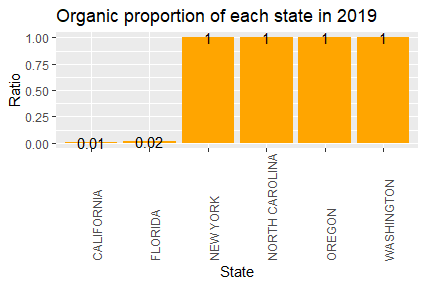
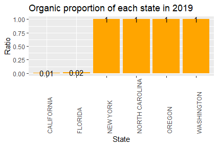
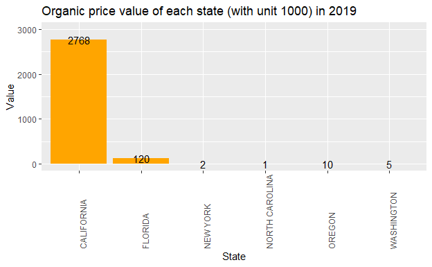
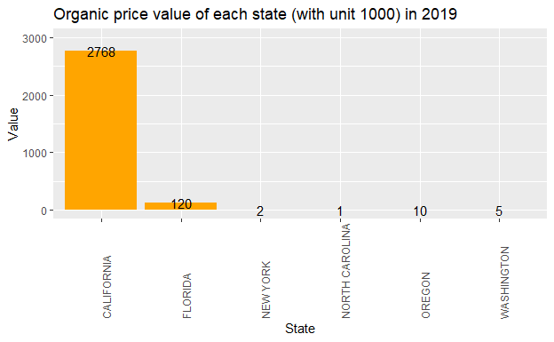
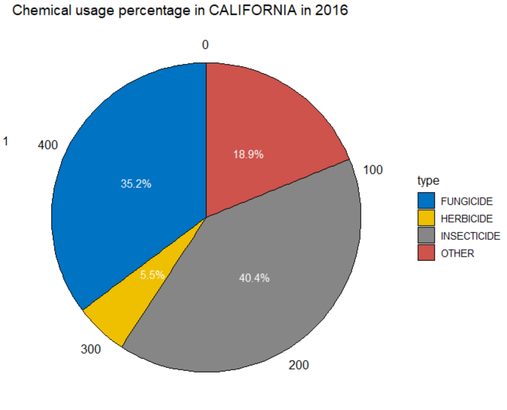
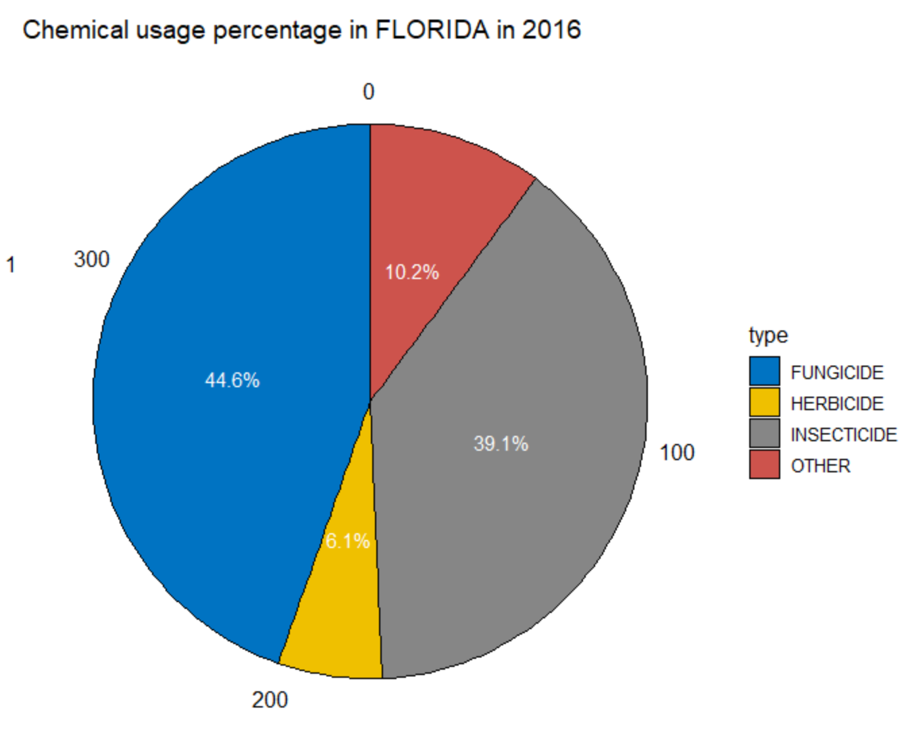
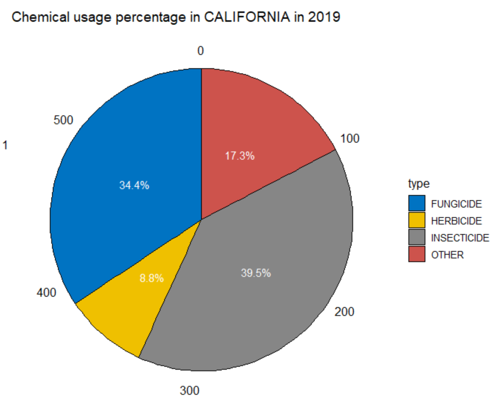
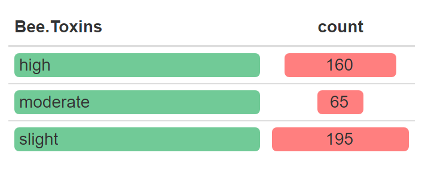
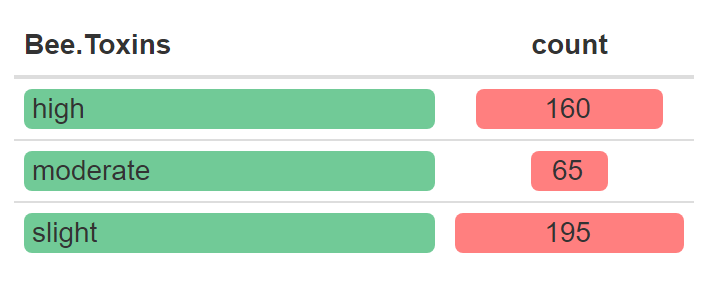

Presentation_team 9
Yuli Jin, Biyao Zhang, Xihao Cao, Jinyu Li
Dec 3, 2021
Introduction
In this assignment, we basically focused on the “Domain” column of the strawberry dataset and generate some related EDA.
In our presentation, we will show you how we wrangled our data, what kind of EDA we have done, and what is something we can tell from our work.
The purpose of this assignment is to show our ability of using R to produce documents, presentations, and shiny apps.
Data Description
There are 2 datasets collected by USDA and presented by Haviland– Strawberries.csv and Pesticides.csv. We need to do some wrangling to join the 2 datasets, make them tidy and clean them.
Strawberries.csv — 3021 rows x 21 columns
Pesticides.csv — 90 rows x 5 columns
Data table
| Program | Year | Period | State | State.ANSI | Strawberries | items | discription | units | measurement | dname | type | Domain.Category | title | Pesticide | Number | Value | CV…. | Pesticide_old | Carcinogen | Hormone.Disruptor | Neurotoxins | Developmental.or.Reproductive.Toxins | Bee.Toxins |
|---|---|---|---|---|---|---|---|---|---|---|---|---|---|---|---|---|---|---|---|---|---|---|---|
| CENSUS | 2019 | YEAR | CALIFORNIA | 6 | STRAWBERRIES | ORGANIC - OPERATIONS WITH SALES | NA | NA | NA | ORGANIC STATUS | NA | ORGANIC STATUS: (NOP USDA CERTIFIED) | NA | NA | 174 | 8 | NA | NA | NA | NA | NA | NA | |
| CENSUS | 2019 | YEAR | CALIFORNIA | 6 | STRAWBERRIES | ORGANIC - SALES | MEASURED IN $ | NA | MEASURED IN $ | ORGANIC STATUS | NA | ORGANIC STATUS: (NOP USDA CERTIFIED) | NA | NA | 300,277,717 | 33.1 | NA | NA | NA | NA | NA | NA | |
| CENSUS | 2019 | YEAR | CALIFORNIA | 6 | STRAWBERRIES | ORGANIC - SALES | MEASURED IN CWT | NA | MEASURED IN CWT | ORGANIC STATUS | NA | ORGANIC STATUS: (NOP USDA CERTIFIED) | NA | NA | 1,384,016 | 30.4 | NA | NA | NA | NA | NA | NA | |
| CENSUS | 2019 | YEAR | CALIFORNIA | 6 | STRAWBERRIES | ORGANIC | FRESH MARKET - OPERATIONS WITH SALES | NA | NA | ORGANIC STATUS | NA | ORGANIC STATUS: (NOP USDA CERTIFIED) | NA | NA | 170 | 8 | NA | NA | NA | NA | NA | NA | |
| CENSUS | 2019 | YEAR | CALIFORNIA | 6 | STRAWBERRIES | ORGANIC | FRESH MARKET - SALES | MEASURED IN $ | MEASURED IN $ | ORGANIC STATUS | NA | ORGANIC STATUS: (NOP USDA CERTIFIED) | NA | NA | 275,716,713 | 35.5 | NA | NA | NA | NA | NA | NA | |
| CENSUS | 2019 | YEAR | CALIFORNIA | 6 | STRAWBERRIES | ORGANIC | FRESH MARKET - SALES | MEASURED IN CWT | MEASURED IN CWT | ORGANIC STATUS | NA | ORGANIC STATUS: (NOP USDA CERTIFIED) | NA | NA | 1,177,214 | 33.7 | NA | NA | NA | NA | NA | NA | |
| CENSUS | 2019 | YEAR | CALIFORNIA | 6 | STRAWBERRIES | ORGANIC | PROCESSING - OPERATIONS WITH SALES | NA | NA | ORGANIC STATUS | NA | ORGANIC STATUS: (NOP USDA CERTIFIED) | NA | NA | 15 | 39.7 | NA | NA | NA | NA | NA | NA | |
| CENSUS | 2019 | YEAR | CALIFORNIA | 6 | STRAWBERRIES | ORGANIC | PROCESSING - SALES | MEASURED IN $ | MEASURED IN $ | ORGANIC STATUS | NA | ORGANIC STATUS: (NOP USDA CERTIFIED) | NA | NA | 24,561,004 | 68.3 | NA | NA | NA | NA | NA | NA | |
| CENSUS | 2019 | YEAR | CALIFORNIA | 6 | STRAWBERRIES | ORGANIC | PROCESSING - SALES | MEASURED IN CWT | MEASURED IN CWT | ORGANIC STATUS | NA | ORGANIC STATUS: (NOP USDA CERTIFIED) | NA | NA | 206,802 | 49.3 | NA | NA | NA | NA | NA | NA | |
| CENSUS | 2019 | YEAR | FLORIDA | 12 | STRAWBERRIES | ORGANIC - OPERATIONS WITH SALES | NA | NA | NA | ORGANIC STATUS | NA | ORGANIC STATUS: (NOP USDA CERTIFIED) | NA | NA | 14 | 30.4 | NA | NA | NA | NA | NA | NA | |
| CENSUS | 2019 | YEAR | FLORIDA | 12 | STRAWBERRIES | ORGANIC - SALES | MEASURED IN $ | NA | MEASURED IN $ | ORGANIC STATUS | NA | ORGANIC STATUS: (NOP USDA CERTIFIED) | NA | NA | 15,055,709 | 83.4 | NA | NA | NA | NA | NA | NA | |
| CENSUS | 2019 | YEAR | FLORIDA | 12 | STRAWBERRIES | ORGANIC - SALES | MEASURED IN CWT | NA | MEASURED IN CWT | ORGANIC STATUS | NA | ORGANIC STATUS: (NOP USDA CERTIFIED) | NA | NA | 59,905 | 76.3 | NA | NA | NA | NA | NA | NA | |
| CENSUS | 2019 | YEAR | FLORIDA | 12 | STRAWBERRIES | ORGANIC | FRESH MARKET - OPERATIONS WITH SALES | NA | NA | ORGANIC STATUS | NA | ORGANIC STATUS: (NOP USDA CERTIFIED) | NA | NA | 14 | 30.4 | NA | NA | NA | NA | NA | NA | |
| CENSUS | 2019 | YEAR | FLORIDA | 12 | STRAWBERRIES | ORGANIC | FRESH MARKET - SALES | MEASURED IN $ | MEASURED IN $ | ORGANIC STATUS | NA | ORGANIC STATUS: (NOP USDA CERTIFIED) | NA | NA | 15,055,709 | 83.4 | NA | NA | NA | NA | NA | NA | |
| CENSUS | 2019 | YEAR | FLORIDA | 12 | STRAWBERRIES | ORGANIC | FRESH MARKET - SALES | MEASURED IN CWT | MEASURED IN CWT | ORGANIC STATUS | NA | ORGANIC STATUS: (NOP USDA CERTIFIED) | NA | NA | 59,905 | 76.3 | NA | NA | NA | NA | NA | NA | |
| CENSUS | 2019 | YEAR | NEW YORK | 36 | STRAWBERRIES | ORGANIC - OPERATIONS WITH SALES | NA | NA | NA | ORGANIC STATUS | NA | ORGANIC STATUS: (NOP USDA CERTIFIED) | NA | NA | 36 | 27.3 | NA | NA | NA | NA | NA | NA | |
| CENSUS | 2019 | YEAR | NEW YORK | 36 | STRAWBERRIES | ORGANIC - SALES | MEASURED IN $ | NA | MEASURED IN $ | ORGANIC STATUS | NA | ORGANIC STATUS: (NOP USDA CERTIFIED) | NA | NA | 644,155 | 42.2 | NA | NA | NA | NA | NA | NA | |
| CENSUS | 2019 | YEAR | NEW YORK | 36 | STRAWBERRIES | ORGANIC - SALES | MEASURED IN CWT | NA | MEASURED IN CWT | ORGANIC STATUS | NA | ORGANIC STATUS: (NOP USDA CERTIFIED) | NA | NA | 2,260 | 32.6 | NA | NA | NA | NA | NA | NA | |
| CENSUS | 2019 | YEAR | NEW YORK | 36 | STRAWBERRIES | ORGANIC | FRESH MARKET - OPERATIONS WITH SALES | NA | NA | ORGANIC STATUS | NA | ORGANIC STATUS: (NOP USDA CERTIFIED) | NA | NA | 34 | 28.7 | NA | NA | NA | NA | NA | NA | |
| CENSUS | 2019 | YEAR | NEW YORK | 36 | STRAWBERRIES | ORGANIC | FRESH MARKET - SALES | MEASURED IN $ | MEASURED IN $ | ORGANIC STATUS | NA | ORGANIC STATUS: (NOP USDA CERTIFIED) | NA | NA |
|
|
NA | NA | NA | NA | NA | NA | |
| CENSUS | 2019 | YEAR | NEW YORK | 36 | STRAWBERRIES | ORGANIC | FRESH MARKET - SALES | MEASURED IN CWT | MEASURED IN CWT | ORGANIC STATUS | NA | ORGANIC STATUS: (NOP USDA CERTIFIED) | NA | NA |
|
|
NA | NA | NA | NA | NA | NA | |
| CENSUS | 2019 | YEAR | NEW YORK | 36 | STRAWBERRIES | ORGANIC | PROCESSING - OPERATIONS WITH SALES | NA | NA | ORGANIC STATUS | NA | ORGANIC STATUS: (NOP USDA CERTIFIED) | NA | NA | 2 | 95 | NA | NA | NA | NA | NA | NA | |
| CENSUS | 2019 | YEAR | NEW YORK | 36 | STRAWBERRIES | ORGANIC | PROCESSING - SALES | MEASURED IN $ | MEASURED IN $ | ORGANIC STATUS | NA | ORGANIC STATUS: (NOP USDA CERTIFIED) | NA | NA |
|
|
NA | NA | NA | NA | NA | NA | |
| CENSUS | 2019 | YEAR | NEW YORK | 36 | STRAWBERRIES | ORGANIC | PROCESSING - SALES | MEASURED IN CWT | MEASURED IN CWT | ORGANIC STATUS | NA | ORGANIC STATUS: (NOP USDA CERTIFIED) | NA | NA |
|
|
NA | NA | NA | NA | NA | NA | |
| CENSUS | 2019 | YEAR | NORTH CAROLINA | 37 | STRAWBERRIES | ORGANIC - OPERATIONS WITH SALES | NA | NA | NA | ORGANIC STATUS | NA | ORGANIC STATUS: (NOP USDA CERTIFIED) | NA | NA | 7 | 43.9 | NA | NA | NA | NA | NA | NA | |
| CENSUS | 2019 | YEAR | NORTH CAROLINA | 37 | STRAWBERRIES | ORGANIC - SALES | MEASURED IN $ | NA | MEASURED IN $ | ORGANIC STATUS | NA | ORGANIC STATUS: (NOP USDA CERTIFIED) | NA | NA | 87,402 | 75.2 | NA | NA | NA | NA | NA | NA | |
| CENSUS | 2019 | YEAR | NORTH CAROLINA | 37 | STRAWBERRIES | ORGANIC - SALES | MEASURED IN CWT | NA | MEASURED IN CWT | ORGANIC STATUS | NA | ORGANIC STATUS: (NOP USDA CERTIFIED) | NA | NA | 300 | 94.1 | NA | NA | NA | NA | NA | NA | |
| CENSUS | 2019 | YEAR | NORTH CAROLINA | 37 | STRAWBERRIES | ORGANIC | FRESH MARKET - OPERATIONS WITH SALES | NA | NA | ORGANIC STATUS | NA | ORGANIC STATUS: (NOP USDA CERTIFIED) | NA | NA | 7 | 43.9 | NA | NA | NA | NA | NA | NA | |
| CENSUS | 2019 | YEAR | NORTH CAROLINA | 37 | STRAWBERRIES | ORGANIC | FRESH MARKET - SALES | MEASURED IN $ | MEASURED IN $ | ORGANIC STATUS | NA | ORGANIC STATUS: (NOP USDA CERTIFIED) | NA | NA | 87,402 | 75.2 | NA | NA | NA | NA | NA | NA | |
| CENSUS | 2019 | YEAR | NORTH CAROLINA | 37 | STRAWBERRIES | ORGANIC | FRESH MARKET - SALES | MEASURED IN CWT | MEASURED IN CWT | ORGANIC STATUS | NA | ORGANIC STATUS: (NOP USDA CERTIFIED) | NA | NA | 300 | 94.1 | NA | NA | NA | NA | NA | NA |
EDA
Organic
Chemicals
Toxins
Strawberry distribution

Organic Rate
This is the organic rate in each state in 2019
 

Organic CWT


Organic Price
 

Chemical
Overview of Chemical usage in 2019 and 2016


Chemical Percentage in 2016
 
Chemical Percentage in 2019
 
Chemical Usage
This part we will show the chemical people use to grow strawberries of each state in 2019.
Toxin Analysis
 

Conclusion
Since the dataset in imbalanced, most observations are from California, thus it is almost meaningless to compare the sum of organic value. And since all observations from New York State, North Carolina, Oregon and Washington are organic in 2019, it is meaningless to compare the Organic proportions in 2016 and 2019 as well.
Chemical substances affect both humans and bees. Among the above-mentioned chemical substances, there are 53 species that have greater side effects on bees. Most of these chemicals contain Carcinogen and Hormone Disruptor, which can cause harm to humans. Therefore, we call for reducing the use of chemical.
Shiny
Reference
Images - Bing images – Strawberry
{kind=link}